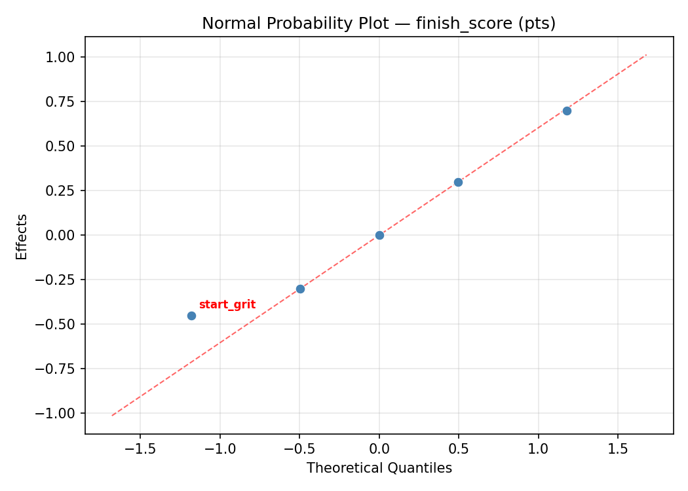
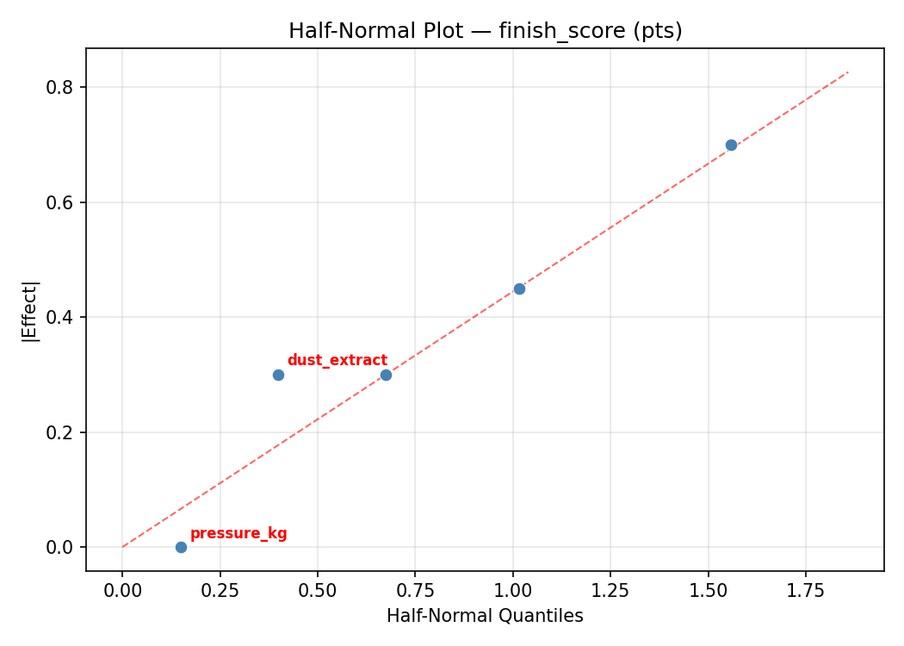
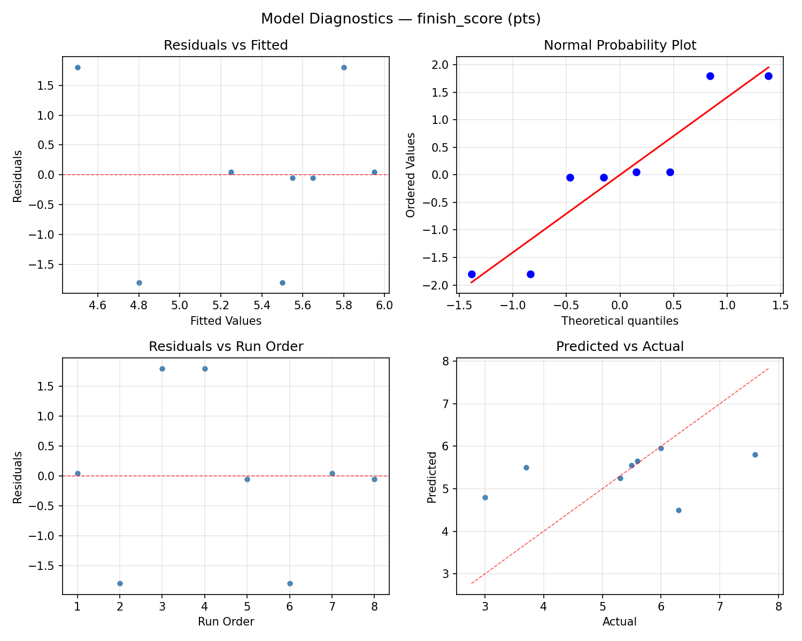
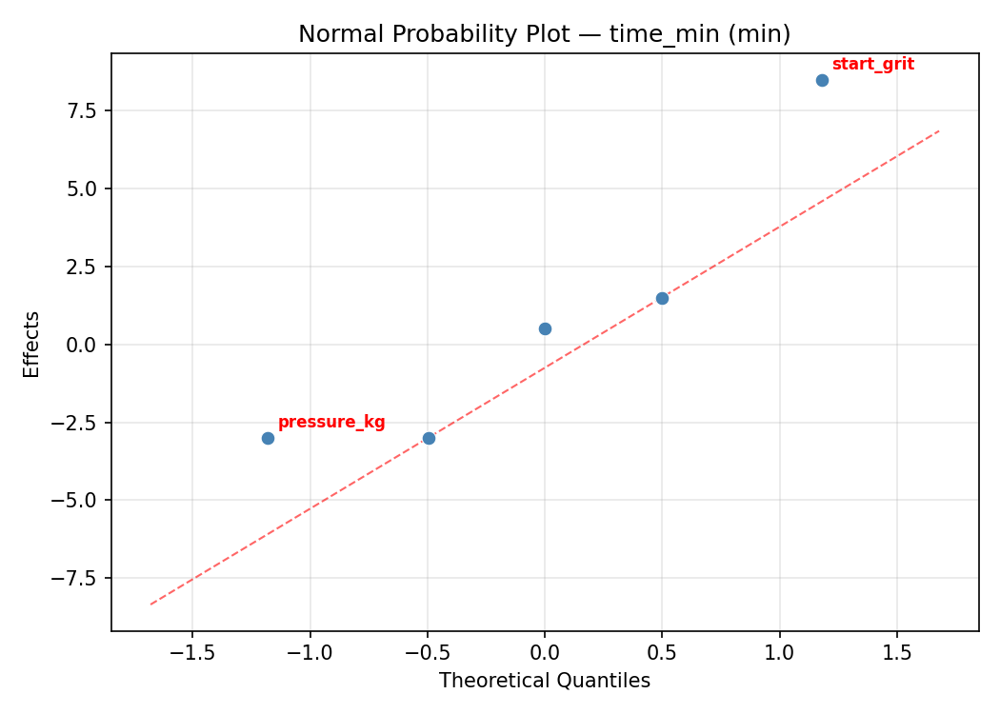
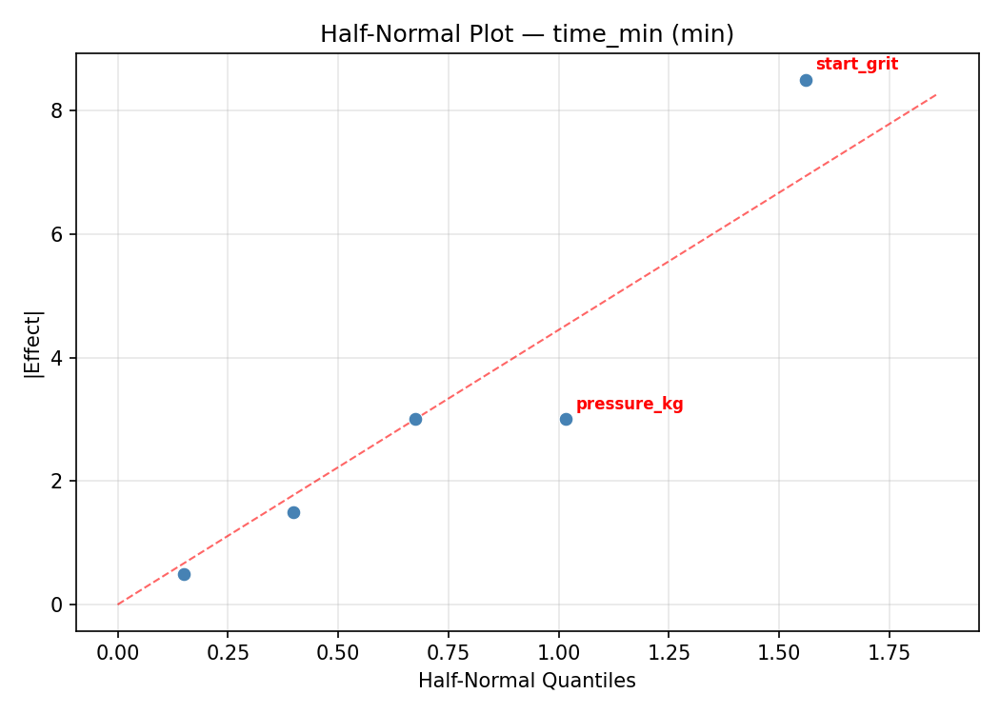
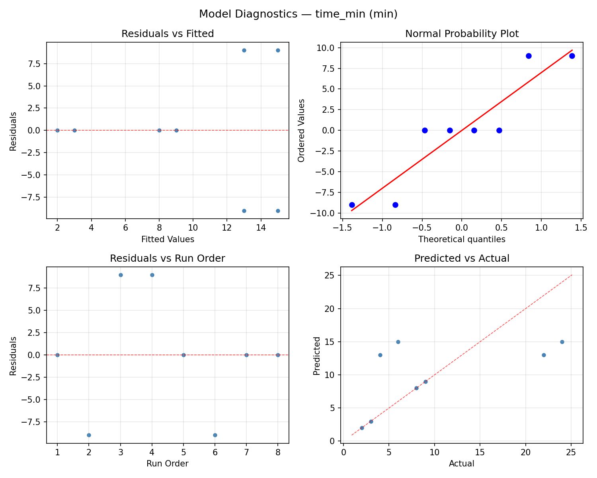

Summary
This experiment investigates sandpaper grit progression. Fractional factorial screening of starting grit, grit steps, sanding pressure, passes per grit, and dust extraction for surface finish and time efficiency.
The design varies 5 factors: start grit (grit), ranging from 60 to 120, grit steps (steps), ranging from 2 to 5, pressure kg (kg), ranging from 0.5 to 3.0, passes (passes), ranging from 3 to 10, and dust extract (bool), ranging from 0 to 1. The goal is to optimize 2 responses: finish score (pts) (maximize) and time min (min) (minimize). Fixed conditions held constant across all runs include wood = walnut, final grit = 220.
A fractional factorial design reduces the number of runs from 32 to 8 by deliberately confounding higher-order interactions. This is ideal for screening — identifying which of the 5 factors matter most before investing in a full study.
Key Findings
For finish score, the most influential factors were grit steps (51.9%), passes (20.8%), pressure kg (15.6%). The best observed value was 7.6 (at start grit = 60, grit steps = 5, pressure kg = 3.0).
For time min, the most influential factors were passes (36.8%), grit steps (33.3%), start grit (22.8%). The best observed value was 2.0 (at start grit = 60, grit steps = 2, pressure kg = 3.0).
Recommended Next Steps
- Follow up with a response surface design (CCD or Box-Behnken) on the top 3–4 factors to model curvature and find the true optimum.
- Consider whether any fixed factors should be varied in a future study.
- The screening results can guide factor reduction — drop factors contributing less than 5% and re-run with a smaller, more focused design.
Experimental Setup
Factors
| Factor | Low | High | Unit |
|---|
start_grit | 60 | 120 | grit |
grit_steps | 2 | 5 | steps |
pressure_kg | 0.5 | 3.0 | kg |
passes | 3 | 10 | passes |
dust_extract | 0 | 1 | bool |
Fixed: wood = walnut, final_grit = 220
Responses
| Response | Direction | Unit |
|---|
finish_score | ↑ maximize | pts |
time_min | ↓ minimize | min |
Configuration
{
"metadata": {
"name": "Sandpaper Grit Progression",
"description": "Fractional factorial screening of starting grit, grit steps, sanding pressure, passes per grit, and dust extraction for surface finish and time efficiency"
},
"factors": [
{
"name": "start_grit",
"levels": [
"60",
"120"
],
"type": "continuous",
"unit": "grit"
},
{
"name": "grit_steps",
"levels": [
"2",
"5"
],
"type": "continuous",
"unit": "steps"
},
{
"name": "pressure_kg",
"levels": [
"0.5",
"3.0"
],
"type": "continuous",
"unit": "kg"
},
{
"name": "passes",
"levels": [
"3",
"10"
],
"type": "continuous",
"unit": "passes"
},
{
"name": "dust_extract",
"levels": [
"0",
"1"
],
"type": "continuous",
"unit": "bool"
}
],
"fixed_factors": {
"wood": "walnut",
"final_grit": "220"
},
"responses": [
{
"name": "finish_score",
"optimize": "maximize",
"unit": "pts"
},
{
"name": "time_min",
"optimize": "minimize",
"unit": "min"
}
],
"settings": {
"operation": "fractional_factorial",
"test_script": "use_cases/205_sandpaper_progression/sim.sh"
}
}
Experimental Matrix
The Fractional Factorial Design produces 8 runs. Each row is one experiment with specific factor settings.
| Run | start_grit | grit_steps | pressure_kg | passes | dust_extract |
|---|
| 1 | 60 | 5 | 3.0 | 3 | 0 |
| 2 | 120 | 2 | 0.5 | 3 | 0 |
| 3 | 120 | 5 | 0.5 | 10 | 0 |
| 4 | 120 | 5 | 3.0 | 10 | 1 |
| 5 | 60 | 5 | 0.5 | 3 | 1 |
| 6 | 120 | 2 | 3.0 | 3 | 1 |
| 7 | 60 | 2 | 0.5 | 10 | 1 |
| 8 | 60 | 2 | 3.0 | 10 | 0 |
Step-by-Step Workflow
1
Preview the design
$ python doe.py info --config use_cases/205_sandpaper_progression/config.json
2
Generate the runner script
$ python doe.py generate --config use_cases/205_sandpaper_progression/config.json \
--output use_cases/205_sandpaper_progression/results/run.sh --seed 42
3
Execute the experiments
$ bash use_cases/205_sandpaper_progression/results/run.sh
4
Analyze results
$ python doe.py analyze --config use_cases/205_sandpaper_progression/config.json
5
Get optimization recommendations
$ python doe.py optimize --config use_cases/205_sandpaper_progression/config.json
6
Multi-objective optimization
With 2 competing responses, use --multi to find the best compromise via Derringer–Suich desirability.
$ python doe.py optimize --config use_cases/205_sandpaper_progression/config.json --multi
7
Generate the HTML report
$ python doe.py report --config use_cases/205_sandpaper_progression/config.json \
--output use_cases/205_sandpaper_progression/results/report.html
Features Exercised
| Feature | Value |
|---|
| Design type | fractional_factorial |
| Factor types | continuous (all 5) |
| Arg style | double-dash |
| Responses | 2 (finish_score ↑, time_min ↓) |
| Total runs | 8 |
Analysis Results
Generated from actual experiment runs using the DOE Helper Tool.
Response: finish_score
Top factors: grit_steps (51.9%), passes (20.8%), pressure_kg (15.6%).
ANOVA
| Source | DF | SS | MS | F | p-value |
|---|
| Source | DF | SS | MS | F | p-value |
| start_grit | 1 | 0.2450 | 0.2450 | 0.667 | 0.4513 |
| grit_steps | 1 | 8.0000 | 8.0000 | 21.769 | 0.0055 |
| pressure_kg | 1 | 0.7200 | 0.7200 | 1.959 | 0.2205 |
| passes | 1 | 1.2800 | 1.2800 | 3.483 | 0.1210 |
| dust_extract | 1 | 0.0200 | 0.0200 | 0.054 | 0.8248 |
| start_grit*grit_steps | 1 | 1.2800 | 1.2800 | 3.483 | 0.1210 |
| start_grit*pressure_kg | 1 | 0.0200 | 0.0200 | 0.054 | 0.8248 |
| start_grit*passes | 1 | 8.0000 | 8.0000 | 21.769 | 0.0055 |
| start_grit*dust_extract | 1 | 0.7200 | 0.7200 | 1.959 | 0.2205 |
| grit_steps*pressure_kg | 1 | 4.2050 | 4.2050 | 11.442 | 0.0196 |
| grit_steps*passes | 1 | 0.2450 | 0.2450 | 0.667 | 0.4513 |
| grit_steps*dust_extract | 1 | 0.2450 | 0.2450 | 0.667 | 0.4513 |
| pressure_kg*passes | 1 | 0.2450 | 0.2450 | 0.667 | 0.4513 |
| pressure_kg*dust_extract | 1 | 0.2450 | 0.2450 | 0.667 | 0.4513 |
| passes*dust_extract | 1 | 4.2050 | 4.2050 | 11.442 | 0.0196 |
| Error | (Lenth | PSE) | 5 | 1.8375 | 0.3675 |
| Total | 7 | 14.7150 | 2.1021 | | |
Pareto Chart

Main Effects Plot

Normal Probability Plot of Effects

Half-Normal Plot of Effects

Model Diagnostics

Response: time_min
Top factors: passes (36.8%), grit_steps (33.3%), start_grit (22.8%).
ANOVA
| Source | DF | SS | MS | F | p-value |
|---|
| Source | DF | SS | MS | F | p-value |
| start_grit | 1 | 84.5000 | 84.5000 | 7.042 | 0.0452 |
| grit_steps | 1 | 180.5000 | 180.5000 | 15.042 | 0.0117 |
| pressure_kg | 1 | 8.0000 | 8.0000 | 0.667 | 0.4513 |
| passes | 1 | 220.5000 | 220.5000 | 18.375 | 0.0078 |
| dust_extract | 1 | 0.0000 | 0.0000 | 0.000 | 1.0000 |
| start_grit*grit_steps | 1 | 220.5000 | 220.5000 | 18.375 | 0.0078 |
| start_grit*pressure_kg | 1 | 0.0000 | 0.0000 | 0.000 | 1.0000 |
| start_grit*passes | 1 | 180.5000 | 180.5000 | 15.042 | 0.0117 |
| start_grit*dust_extract | 1 | 8.0000 | 8.0000 | 0.667 | 0.4513 |
| grit_steps*pressure_kg | 1 | 8.0000 | 8.0000 | 0.667 | 0.4513 |
| grit_steps*passes | 1 | 84.5000 | 84.5000 | 7.042 | 0.0452 |
| grit_steps*dust_extract | 1 | 8.0000 | 8.0000 | 0.667 | 0.4513 |
| pressure_kg*passes | 1 | 8.0000 | 8.0000 | 0.667 | 0.4513 |
| pressure_kg*dust_extract | 1 | 84.5000 | 84.5000 | 7.042 | 0.0452 |
| passes*dust_extract | 1 | 8.0000 | 8.0000 | 0.667 | 0.4513 |
| Error | (Lenth | PSE) | 5 | 60.0000 | 12.0000 |
| Total | 7 | 509.5000 | 72.7857 | | |
Pareto Chart

Main Effects Plot

Normal Probability Plot of Effects

Half-Normal Plot of Effects

Model Diagnostics

Response Surface Plots
3D surfaces fitted with quadratic RSM. Red dots are observed data points.
finish score grit steps vs dust extract

finish score grit steps vs passes

finish score grit steps vs pressure kg

finish score passes vs dust extract

finish score pressure kg vs dust extract

finish score pressure kg vs passes

finish score start grit vs dust extract

finish score start grit vs grit steps

finish score start grit vs passes

finish score start grit vs pressure kg

time min grit steps vs dust extract

time min grit steps vs passes

time min grit steps vs pressure kg

time min passes vs dust extract

time min pressure kg vs dust extract

time min pressure kg vs passes

time min start grit vs dust extract

time min start grit vs grit steps

time min start grit vs passes

time min start grit vs pressure kg

Multi-Objective Optimization
When responses compete, Derringer–Suich desirability finds the best compromise.
Each response is scaled to a 0–1 desirability, then combined via a weighted geometric mean.
Overall Desirability
D = 0.7200
Per-Response Desirability
| Response | Weight | Desirability | Predicted | Dir |
|---|
finish_score |
1.5 |
|
6.59 0.7545 6.59 pts |
↑ |
time_min |
1.0 |
|
8.86 0.6711 8.86 min |
↓ |
Recommended Settings
| Factor | Value |
|---|
start_grit | 75.62 grit |
grit_steps | 5 steps |
pressure_kg | 2.822 kg |
passes | 9.972 passes |
dust_extract | 0.9599 bool |
Source: from RSM model prediction
Trade-off Summary
Sacrifice = how much worse than single-objective best.
| Response | Predicted | Best Observed | Sacrifice |
|---|
time_min | 8.86 | 2.00 | +6.86 |
Top 3 Runs by Desirability
| Run | D | Factor Settings |
|---|
| #1 | 0.6490 | start_grit=120, grit_steps=5, pressure_kg=0.5, passes=10, dust_extract=0 |
| #7 | 0.6476 | start_grit=120, grit_steps=5, pressure_kg=3.0, passes=10, dust_extract=1 |
Model Quality
| Response | R² | Type |
|---|
time_min | 0.6104 | linear |
Full Multi-Objective Output
============================================================
MULTI-OBJECTIVE OPTIMIZATION
Method: Derringer-Suich Desirability Function
============================================================
Overall desirability: D = 0.7200
Response Weight Desirability Predicted Direction
---------------------------------------------------------------------
finish_score 1.5 0.7545 6.59 pts ↑
time_min 1.0 0.6711 8.86 min ↓
Recommended settings:
start_grit = 75.62 grit
grit_steps = 5 steps
pressure_kg = 2.822 kg
passes = 9.972 passes
dust_extract = 0.9599 bool
(from RSM model prediction)
Trade-off summary:
finish_score: 6.59 (best observed: 7.60, sacrifice: +1.01)
time_min: 8.86 (best observed: 2.00, sacrifice: +6.86)
Model quality:
finish_score: R² = 0.4563 (linear)
time_min: R² = 0.6104 (linear)
Top 3 observed runs by overall desirability:
1. Run #5 (D=0.6805): start_grit=60, grit_steps=5, pressure_kg=3.0, passes=3, dust_extract=0
2. Run #1 (D=0.6490): start_grit=120, grit_steps=5, pressure_kg=0.5, passes=10, dust_extract=0
3. Run #7 (D=0.6476): start_grit=120, grit_steps=5, pressure_kg=3.0, passes=10, dust_extract=1
Full Analysis Output
=== Main Effects: finish_score ===
Factor Effect Std Error % Contribution
--------------------------------------------------------------
grit_steps 2.0000 0.5126 51.9%
passes 0.8000 0.5126 20.8%
pressure_kg -0.6000 0.5126 15.6%
start_grit 0.3500 0.5126 9.1%
dust_extract -0.1000 0.5126 2.6%
=== ANOVA Table: finish_score ===
Source DF SS MS F p-value
-----------------------------------------------------------------------------
start_grit 1 0.2450 0.2450 0.667 0.4513
grit_steps 1 8.0000 8.0000 21.769 0.0055
pressure_kg 1 0.7200 0.7200 1.959 0.2205
passes 1 1.2800 1.2800 3.483 0.1210
dust_extract 1 0.0200 0.0200 0.054 0.8248
start_grit*grit_steps 1 1.2800 1.2800 3.483 0.1210
start_grit*pressure_kg 1 0.0200 0.0200 0.054 0.8248
start_grit*passes 1 8.0000 8.0000 21.769 0.0055
start_grit*dust_extract 1 0.7200 0.7200 1.959 0.2205
grit_steps*pressure_kg 1 4.2050 4.2050 11.442 0.0196
grit_steps*passes 1 0.2450 0.2450 0.667 0.4513
grit_steps*dust_extract 1 0.2450 0.2450 0.667 0.4513
pressure_kg*passes 1 0.2450 0.2450 0.667 0.4513
pressure_kg*dust_extract 1 0.2450 0.2450 0.667 0.4513
passes*dust_extract 1 4.2050 4.2050 11.442 0.0196
Error (Lenth PSE) 5 1.8375 0.3675
Total 7 14.7150 2.1021
Note: Error estimated using Lenth's pseudo-standard-error (unreplicated design)
=== Interaction Effects: finish_score ===
Factor A Factor B Interaction % Contribution
------------------------------------------------------------------------
start_grit passes 2.0000 25.6%
grit_steps pressure_kg 1.4500 18.6%
passes dust_extract -1.4500 18.6%
start_grit grit_steps 0.8000 10.3%
start_grit dust_extract 0.6000 7.7%
grit_steps passes 0.3500 4.5%
grit_steps dust_extract -0.3500 4.5%
pressure_kg passes 0.3500 4.5%
pressure_kg dust_extract -0.3500 4.5%
start_grit pressure_kg 0.1000 1.3%
=== Summary Statistics: finish_score ===
start_grit:
Level N Mean Std Min Max
------------------------------------------------------------
120 4 5.2000 1.0231 3.7000 6.0000
60 4 5.5500 1.9434 3.0000 7.6000
grit_steps:
Level N Mean Std Min Max
------------------------------------------------------------
2 4 4.3750 1.2203 3.0000 5.5000
5 4 6.3750 0.8655 5.6000 7.6000
pressure_kg:
Level N Mean Std Min Max
------------------------------------------------------------
0.5 4 5.6750 0.4349 5.3000 6.3000
3.0 4 5.0750 2.1156 3.0000 7.6000
passes:
Level N Mean Std Min Max
------------------------------------------------------------
10 4 4.9750 1.3475 3.0000 6.0000
3 4 5.7750 1.6317 3.7000 7.6000
dust_extract:
Level N Mean Std Min Max
------------------------------------------------------------
0 4 5.4250 1.8839 3.0000 7.6000
1 4 5.3250 1.1615 3.7000 6.3000
=== Main Effects: time_min ===
Factor Effect Std Error % Contribution
--------------------------------------------------------------
passes 10.5000 3.0163 36.8%
grit_steps 9.5000 3.0163 33.3%
start_grit 6.5000 3.0163 22.8%
pressure_kg 2.0000 3.0163 7.0%
dust_extract 0.0000 3.0163 0.0%
=== ANOVA Table: time_min ===
Source DF SS MS F p-value
-----------------------------------------------------------------------------
start_grit 1 84.5000 84.5000 7.042 0.0452
grit_steps 1 180.5000 180.5000 15.042 0.0117
pressure_kg 1 8.0000 8.0000 0.667 0.4513
passes 1 220.5000 220.5000 18.375 0.0078
dust_extract 1 0.0000 0.0000 0.000 1.0000
start_grit*grit_steps 1 220.5000 220.5000 18.375 0.0078
start_grit*pressure_kg 1 0.0000 0.0000 0.000 1.0000
start_grit*passes 1 180.5000 180.5000 15.042 0.0117
start_grit*dust_extract 1 8.0000 8.0000 0.667 0.4513
grit_steps*pressure_kg 1 8.0000 8.0000 0.667 0.4513
grit_steps*passes 1 84.5000 84.5000 7.042 0.0452
grit_steps*dust_extract 1 8.0000 8.0000 0.667 0.4513
pressure_kg*passes 1 8.0000 8.0000 0.667 0.4513
pressure_kg*dust_extract 1 84.5000 84.5000 7.042 0.0452
passes*dust_extract 1 8.0000 8.0000 0.667 0.4513
Error (Lenth PSE) 5 60.0000 12.0000
Total 7 509.5000 72.7857
Note: Error estimated using Lenth's pseudo-standard-error (unreplicated design)
=== Interaction Effects: time_min ===
Factor A Factor B Interaction % Contribution
------------------------------------------------------------------------
start_grit grit_steps 10.5000 24.4%
start_grit passes 9.5000 22.1%
grit_steps passes 6.5000 15.1%
pressure_kg dust_extract -6.5000 15.1%
start_grit dust_extract -2.0000 4.7%
grit_steps pressure_kg 2.0000 4.7%
grit_steps dust_extract 2.0000 4.7%
pressure_kg passes -2.0000 4.7%
passes dust_extract -2.0000 4.7%
start_grit pressure_kg 0.0000 0.0%
=== Summary Statistics: time_min ===
start_grit:
Level N Mean Std Min Max
------------------------------------------------------------
120 4 6.5000 2.6458 3.0000 9.0000
60 4 13.0000 11.6046 2.0000 24.0000
grit_steps:
Level N Mean Std Min Max
------------------------------------------------------------
2 4 5.0000 2.5820 2.0000 8.0000
5 4 14.5000 10.1489 3.0000 24.0000
pressure_kg:
Level N Mean Std Min Max
------------------------------------------------------------
0.5 4 8.7500 9.2150 2.0000 22.0000
3.0 4 10.7500 9.0692 4.0000 24.0000
passes:
Level N Mean Std Min Max
------------------------------------------------------------
10 4 4.5000 3.1091 2.0000 9.0000
3 4 15.0000 9.3095 6.0000 24.0000
dust_extract:
Level N Mean Std Min Max
------------------------------------------------------------
0 4 9.7500 9.7425 3.0000 24.0000
1 4 9.7500 8.6554 2.0000 22.0000
Optimization Recommendations
=== Optimization: finish_score ===
Direction: maximize
Best observed run: #4
start_grit = 60
grit_steps = 5
pressure_kg = 3.0
passes = 3
dust_extract = 0
Value: 7.6
RSM Model (linear, R² = 0.7632, Adj R² = 0.1711):
Coefficients:
intercept +5.3750
start_grit -0.1500
grit_steps +0.1500
pressure_kg +0.1750
passes -0.8750
dust_extract -0.7500
Predicted optimum (from linear model, at observed points):
start_grit = 60
grit_steps = 5
pressure_kg = 3.0
passes = 3
dust_extract = 0
Predicted value: 7.4750
Surface optimum (via L-BFGS-B, linear model):
start_grit = 60
grit_steps = 5
pressure_kg = 3
passes = 3
dust_extract = 0
Predicted value: 7.4750
Model quality: Good fit — general trends are captured, some noise remains.
Factor importance:
1. passes (effect: 1.8, contribution: 41.7%)
2. dust_extract (effect: -1.5, contribution: 35.7%)
3. pressure_kg (effect: 0.3, contribution: 8.3%)
4. start_grit (effect: 0.3, contribution: 7.1%)
5. grit_steps (effect: 0.3, contribution: 7.1%)
=== Optimization: time_min ===
Direction: minimize
Best observed run: #7
start_grit = 60
grit_steps = 2
pressure_kg = 3.0
passes = 10
dust_extract = 0
Value: 2.0
RSM Model (linear, R² = 0.5211, Adj R² = -0.6762):
Coefficients:
intercept +9.7500
start_grit -0.2500
grit_steps +1.5000
pressure_kg +3.2500
passes -4.5000
dust_extract +0.2500
Predicted optimum (from linear model, at observed points):
start_grit = 60
grit_steps = 5
pressure_kg = 3.0
passes = 3
dust_extract = 0
Predicted value: 19.0000
Surface optimum (via L-BFGS-B, linear model):
start_grit = 120
grit_steps = 2
pressure_kg = 0.5
passes = 10
dust_extract = 0
Predicted value: -0.0000
Model quality: Moderate fit — use predictions directionally, not precisely.
Factor importance:
1. passes (effect: 9.0, contribution: 46.2%)
2. pressure_kg (effect: 6.5, contribution: 33.3%)
3. grit_steps (effect: 3.0, contribution: 15.4%)
4. start_grit (effect: 0.5, contribution: 2.6%)
5. dust_extract (effect: 0.5, contribution: 2.6%)